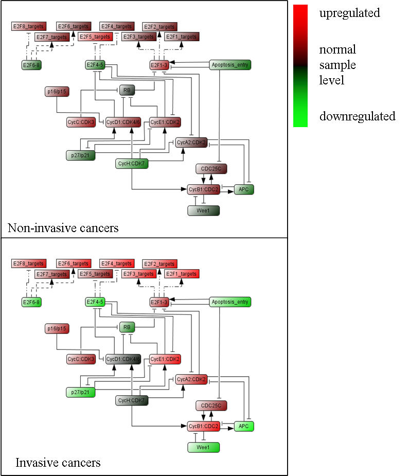
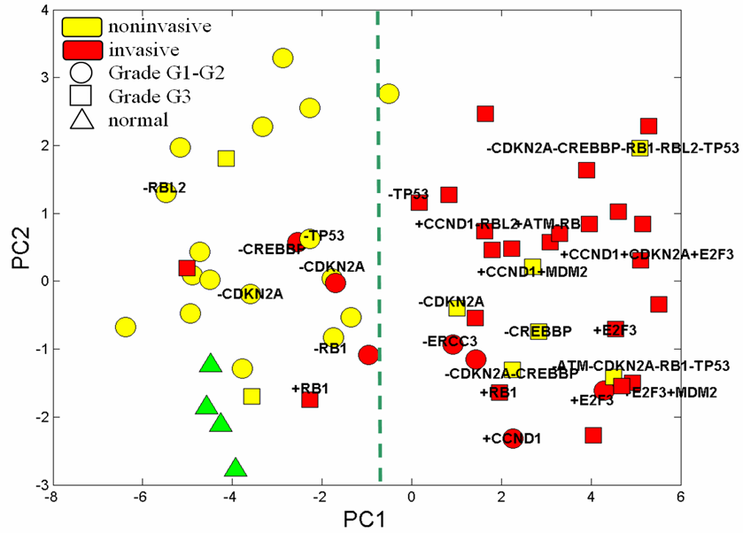

We propose to illustrate the use of the RB/E2F pathway diagram and its modular decomposition to a concrete example in order to obtain insights into molecular mechanisms of cancer progression. We analyze transcriptome and CGH (Comparative Genomics Hybridization) data collected for 55 patients with bladder cancers together with 5 normal urothelium samples (Stransky et al., 2006).
Activity of the modules
We estimate the ‘activity’ level of each module, based on the expression levels of the genes in the modules. For that, we choose to use PCA-based estimation of pathway activities. Inside every module, we determine “hot spot genes”, which correspond to genes whose expression contributes mostly to the value of the module activity (details in manuscript in preparation).
Analysis of the samples
The tumour samples are divided in two groups, non-invasive (less profound, superficial tumours) and invasive (more profound, invading the underlying muscle) stages of the disease. The results are consistent with our understanding of the molecular mechanism of bladder cancer progression (Figure below).
From the figure, we deduce that cyclin/CDKs complexes play an active role in invasive cancers as well as the activation of E2F1-3 targets..
The figure also shows a particular behaviour of Cyclin D1 module which is in average less activated in invasive cancers than in non-invasive, in agreement with the literature (Tut et al., 2001). Overexpression of Cyclin D1 associated with amplification occurs in invasive tumours but is a rare event (3 out of 30 tumours in this series).
Remarkably, all but one inhibitory modules (RB, E2F4-5, E2F6-8, p27KIP1/p21CIP1, Wee1, APC and Apoptosis entry) were downregulated in invasive tumours compared to superficial tumours. These results were known for some genes (RB, P27) and point out new genes likely to be involved in bladder tumour progression. Downregulation of E2F4-5 and E2F6-8 modules is consistent with observed upregulation of their target gene modules. The upregulation of the inhibitory p15/p16 module in invasive tumours is coherent with the increase of the E2F modules as the p16 gene is activated by E2F1.

Classification of the samples
It can be shown that in the 24-dimensional space of the module activities, tumour samples form two distinctive clusters separated along the first principal component (Figure below).
This separation is completely consistent with the known two progression pathways which exist in bladder cancer:
1. The Ta low grade pathway and the carcinoma in situ invasive tumour pathway, a hallmark of the Ta pathway being FGFR3 mutations (Billerey et al., 2001). All the low grade papillary tumours are in the same cluster. Interestingly most of the invasive tumours which belong to this cluster (4/5) carry FGFR3 mutations and therefore belong to the same progression pathway.
2. The other cluster, contains either only invasive tumours or high grade (G3) superficial tumors. Furthermore the majority of the tumours of this cluster did not carry FGFR3 mutations (29/31, compared to 3/24 in the other group).
We also labelled some of the samples according to the most significant genomic alterations in the regions of genes known to be involved in cancer and participating in RB/E2F pathway. Thus, one can notice a higher frequency of genomic alterations in the aggressive tumours, and an amplification of E2F3 transcription factor that drives module activities towards the extremity of the right more aggressive cluster where there is the ‘most compromised’ RB/E2F-pathway behaviour.
Taken together, all these observations give a highly consistent picture of the alterations of the RB/E2F pathway in bladder cancer which are clearly different in the two pathways of bladder tumour progression.
We are preparing a more thorough study.
